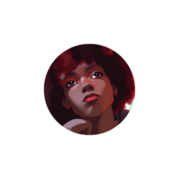

Sobre nós
Somos quatro alunos de programação da Turma 23 da Proz e unimos nossas habilidades para fazer um trabalho: criar uma livraria fictícia online., desenvolvemos uma plataforma digital onde os usuários podem explorar e simular a compra de livros.

Aldvan
Sobre Aldvan
Jhulyanne
Sobre Jhulyanne

Igor
Sobre Igor

Silas
Eu sou o Silas, tenho 33 anos e sou auxiliar administrativo. Além disso, sou um grande fã de jogos de RPG, animes e cinema. E agora tô aprendendo a programar, explorando um monte de coisas novas.
"O futuro é incerto. Mas isso é o que o torna tão interessante." - Alvis, Xenoblade Chronicles